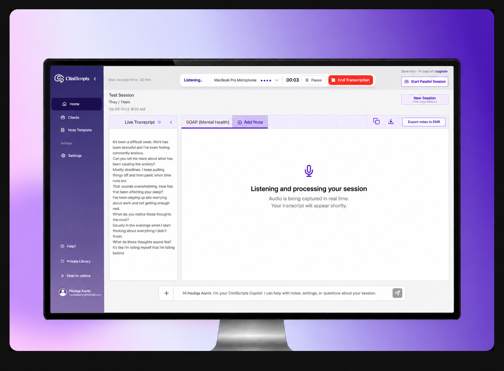
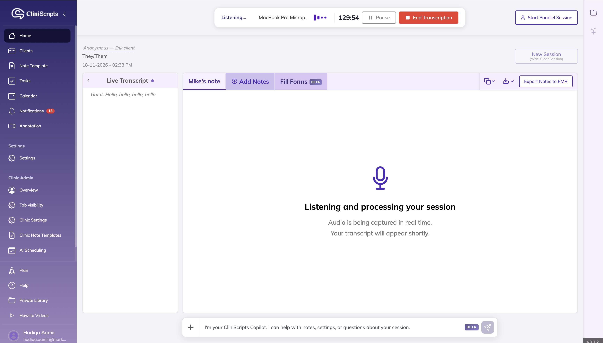
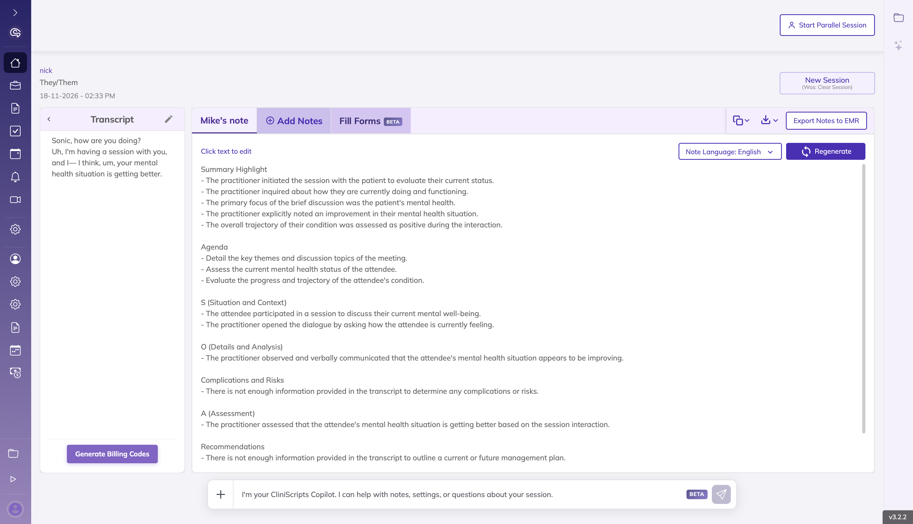

Support multiple working contexts without creating separate products.
CliniScripts · Module 01A
AI interaction · Clinical documentation · Human review
AI assistance that supports clinical judgment without replacing it.
I designed a documentation flow that turns different forms of clinical input into an organized draft while keeping review, editing and approval with the clinician.

My role
Product design from flow to QA
Users
Clinicians and care teams
Design focus
Trust, editability and source visibility
Platform
Part of CliniScripts
01 · Problem
Faster documentation is only useful when the output remains accountable.
Clinical input can begin as a live session, telehealth visit, spoken recap or uploaded material. The challenge was to create one understandable path through these entry points while clearly separating AI-generated content from a clinician-approved record.
Make generated information identifiable, editable and reviewable.
Connect the resulting note to the wider client record.
02 · Process
I designed the review path before polishing the interface.
Map inputs
Identify how sessions, dictation and files enter the documentation flow.
Define states
Separate processing, generated draft, edited draft and approved record.
Prototype review
Test hierarchy, source visibility and editing actions in realistic flows.
Support delivery
Collaborate through implementation and review behaviour during product QA.
Core interaction
One path from raw input to an approved clinical record.
The system organizes information, but the interface makes human responsibility explicit at the consequential step.
Clinical input→AI-organized draft→Clinician edits→Approved record
Product flow
The interface keeps the source beside the generated documentation.
Each state makes it clear what the system is doing and what still requires clinician attention. The transcript remains visible as the source of truth while the note moves from capture to an editable draft.



Screens show test or demonstration content and do not contain real patient records.
03 · Execution
The design contribution continued through implementation.
- Entry-point and documentation flows
- Generated-content states
- Review and approval interactions
- Source visibility patterns
- Responsive high-fidelity UI
- Reusable documentation components
- Engineering collaboration
- Implementation review and product QA
Next CliniScripts module
Intelligent scheduling 01B